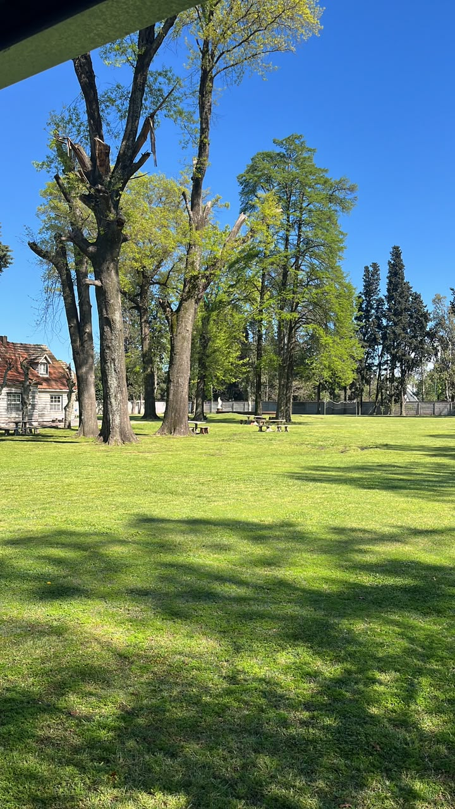

Nuestra historia
El Centro Madre Teresa es una comunidad que fue creciendo a través de los encuentros, la fe, el servicio y el acompañamiento a niños y jóvenes. Su historia está formada por personas que, con su compromiso, fueron dando vida a distintos grupos y actividades.

Nuestros comienzos
Los comienzos de esta historia están vinculados a la llegada de las Pequeñas Madres de los Pobres desde un centro relacionado con Lourdes, en José C. Paz, con la aceptación del obispo Damián Danini.

A partir de esta experiencia comenzó a tomar forma una comunidad dedicada al encuentro, la vida espiritual y el servicio a los demás.
Una comunidad que crece
Entre las primeras experiencias se destacó un grupo de preadolescentes mujeres. Lo que comenzó con alrededor de cinco integrantes fue creciendo hasta reunir a más jóvenes.

En los encuentros compartían momentos de acompañamiento espiritual, juegos, música y servicio. También participaban en actividades vinculadas a la Parroquia América.
Con el tiempo, estos encuentros fueron fortaleciendo los vínculos y el sentido de comunidad.
Una historia que continúa
Cada grupo, cada encuentro y cada persona forman parte de una historia que sigue construyéndose. El Centro Madre Teresa busca continuar siendo un lugar de encuentro, acompañamiento y servicio, inspirado en el deseo de hacer de la vida algo hermoso para Dios.